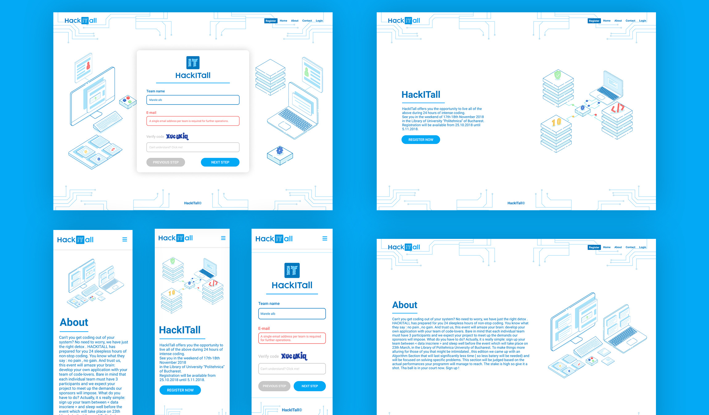

HackITall- website redesign
This project brought together two of the most important passions of mine, computer science and volunteering. How exactly? One of my tasks, as the Design Department Manager, was to redesign the website with a fresh and modern style that would outline the nature of the contest and attract participants at HackITall.
HackITall is an event held by LSAC which implies a hackathon, or a programming contest, to be more specific, in which the competitors have to solve a series of tasks during a 24 hours marathon and LSAC is a non-profit organisation that deals with students, through volunteer work.
When I took this project I thought:Cool, I have to do the design for the best hackathon in Bucharest!
, I did not know then how hard it will be to design the interface of the website. I had to chose from two different styles for the website, and after a few meetings with the Departament of Design, I picked the isometric style for the illustrations. The website would be, of course, technology driven and all the illustrations should fit in the theme. The major UX challange was making the user to register. The PR offered me the text so I could add elements that would guide the user to the register page.
I had to make the wireframes in order to be understood and my team would understand what impact the design decisions would have on the website.
The color scheme for the design was chosen from the previous editions of this Hackathon, but I still had to chose the right font and create the illustrations.
